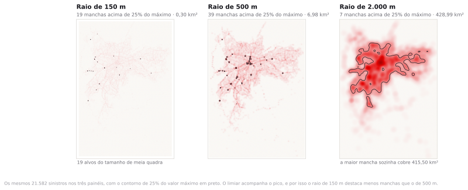
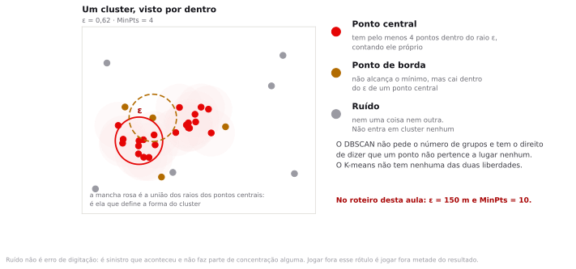

Preparação e dados
A leitura do tema era a nota metodológica do Infosiga SP sobre como um sinistro entra na base e como recebe coordenada. São doze minutos. Ela importa hoje porque metade das decisões do roteiro depende de saber o que é um registro e o que é uma vítima.
Os arquivos deste tema já vêm em EPSG:31983, em metros. Isso não é detalhe de conveniência: os três métodos de hoje recebem um raio como parâmetro, e raio só tem sentido em metros.
- sinistros_sp_capital_2025.gpkg 21.653 sinistros de trânsito com vítima e com coordenada, no município de São Paulo, ano de 2025, com gravidade, tipo de sinistro, turno e contagem de veículos por modo. Ponto, EPSG:31983.oficial
- viario_estrutural_sp.gpkg 266 trechos do viário estrutural do Plano Diretor, Mapa 8, 475,3 km no total, para apoiar a leitura dos agrupamentos. Linha, EPSG:31983.oficial
Uma secretaria municipal tem R$ 12 milhões para requalificar cinco pontos da malha viária no próximo exercício. Você recebe a base de sinistros com vítimas dos últimos dois anos e uma semana de prazo. Quais cinco pontos, e como você defende a escolha diante de um vereador que quer o ponto do bairro dele?
Densidade e agrupamento
No tema anterior você descreveu uma nuvem de pontos com centro e dispersão. Nenhuma daquelas medidas responde onde. O centro médio dos sinistros de São Paulo em 2025 cai no distrito da Liberdade, a duzentos metros da Avenida da Aclimação, o que é verdade e é inútil: ninguém constrói uma rotatória no centro médio.
Hoje a pergunta é outra. Existe concentração acima do que o acaso produziria? Se existe, em que lugares? E dá para transformar esses lugares em uma lista ordenada que um secretário assine? Os quatro métodos desta aula respondem partes diferentes dessa cadeia, e cada um encaixa em um tipo de decisão; boa parte do trabalho de hoje é aprender a escolher pelo tipo de decisão, não pelo aspecto do mapa.
Dois testes contra a aleatoriedade
Antes de procurar onde, convém confirmar que há o que procurar. Os dois testes clássicos partem do mesmo modelo nulo do tema anterior, a aleatoriedade espacial completa, e chegam ao mesmo veredito por caminhos distintos.
Quadrats e índice de dispersão
Divide-se a área em células de tamanho igual e conta-se quantos eventos caem em cada uma. Sob aleatoriedade, essa contagem segue uma distribuição de Poisson, cuja variância é igual à média. O índice de dispersão é a razão entre a variância observada e a média observada. Vale 1 no padrão aleatório, menos de 1 no regular e mais de 1 no agrupado.
Índice do vizinho mais próximo
Mede-se, para cada evento, a distância até o evento mais próximo, e tira-se a média. Sob aleatoriedade, essa média vale 0,5 dividido pela raiz da densidade de pontos por unidade de área. O índice R é a razão entre a média observada e a esperada. Abaixo de 1 indica agrupamento, acima de 1 indica regularidade.

Os dois testes têm o mesmo defeito e é um defeito grande. O índice de dispersão depende do tamanho da célula: com quadrats de 1 km ele dá 26,31 sobre a mesma base, e com 2 km dá 83,05, três vezes mais. É o problema da unidade de área modificável, que você viu no tema 3, reaparecendo aqui. O índice do vizinho mais próximo depende da área adotada no denominador: com o retângulo envolvente, 3.218,5 km², R dá 0,366; com a envoltória convexa dos pontos, 2.766,4 km², dá 0,395; com o polígono do município, 1.521,1 km², dá 0,533. O último é o único denominador que corresponde a um território onde a prefeitura pode intervir, e é o menos favorável à tese do agrupamento.
Se os dois índices dependem de escolhas arbitrárias, para que servem?
Para descartar a hipótese preguiçosa. Mesmo no denominador mais conservador, R fica em 0,533 com escore z de −131,2. Nenhuma escolha razoável de recorte levaria esse padrão de volta para perto da aleatoriedade. O que os índices não fazem é apontar lugar: eles resumem a cidade inteira em um número. Servem como porta de entrada, e o erro é parar neles.
Kernel: a largura de banda é a decisão
O estimador de densidade por kernel troca a contagem por célula por uma superfície contínua. Sobre cada evento coloca-se uma função em forma de sino, com raio de influência definido, e somam-se todas as funções. Onde os sinos se sobrepõem, o valor sobe. O resultado é um raster em que cada pixel traz uma densidade de eventos por unidade de área.
Duas coisas se escolhem. A forma da função quase não muda o resultado. O raio de influência, a largura de banda, muda a contagem de manchas, a área destacada e a recomendação que sai do mapa.

Banda pequena produz um mapa de pulgas: dezenas de picos minúsculos, cada um com um punhado de eventos, sem estabilidade nenhuma. Rode com um ano de dado diferente e os picos mudam de lugar. Banda grande produz uma mancha só, que confirma o que todo mundo já sabia sobre a cidade e não indica esquina alguma.
Existem regras de referência que sugerem um valor a partir da dispersão dos dados, e existem métodos adaptativos que variam a banda conforme a densidade local. Nenhum deles conhece a sua pergunta. Se a intervenção é semaforização de cruzamento, a banda tem que ser da ordem da quadra. Se é uma campanha de fiscalização por região, a banda é da ordem do quilômetro. Em vez de procurar um valor certo, escolha um valor que você consiga justificar pela decisão que o mapa vai apoiar, e registre a justificativa.
Um consultor entrega um mapa de calor sem informar a largura de banda. O que você faz?
Devolve. Um mapa de calor sem banda declarada é como uma área sem CRS: o número existe e não é auditável. Peça também o tamanho do pixel e se a saída é bruta ou reescalada: a legenda raramente diz qual das duas é, e a leitura muda conforme a resposta.
DBSCAN: agrupar por densidade
O kernel devolve uma superfície contínua, e superfície não se ordena nem entra em edital. Para transformar concentração em objetos que se possam contar, nomear e ranquear, é preciso um algoritmo de agrupamento, e o mais usado em dado espacial é o DBSCAN.
Ele trabalha com dois parâmetros. O raio ε, que define a vizinhança de cada ponto, e o MinPts, o número mínimo de pontos que essa vizinhança precisa conter para que o ponto seja considerado denso. A partir daí, três categorias.

A terceira categoria é a que distingue o DBSCAN. Um ponto que não é central nem alcança nenhum central é rotulado como ruído, e fica fora de todos os clusters. No arquivo deste tema, com ε de 150 metros e MinPts de 10, isso acontece com 15.624 dos 21.582 sinistros, ou 72,4%. Quase três quartos dos sinistros da cidade não pertencem a concentração alguma.
Há um preço do outro lado. Um cluster do DBSCAN cresce por contágio: basta uma fileira de pontos densos ligando duas manchas para que as duas virem uma só. Numa cidade em que os sinistros se distribuem ao longo de avenidas contínuas, essa fileira quase sempre existe.
Com ε de 300 metros, o mesmo arquivo devolve um agrupamento que junta Marginal Tietê, Marginal Pinheiros, Radial Leste e o centro: são 5.334 sinistros e 235,8 km² de envoltória, um quarto do território analisado dentro de um único identificador de cluster. Com 600 metros o encadeamento consome a cidade inteira: 20.446 dos 21.582 pontos ficam no mesmo cluster. O algoritmo não errou. Ele respondeu que, nessa escala, São Paulo é uma mancha só.
Na literatura e nas bibliotecas de Python, o ruído recebe o rótulo −1. No QGIS, a coluna CLUSTER_ID devolve esses pontos com valor nulo, em branco na tabela de atributos. É o mesmo conceito com duas convenções. Filtre por "CLUSTER_ID" IS NULL para isolá-los.
Um método que deixa 72,4% dos casos de fora está funcionando bem?
Está funcionando conforme especificado. Os 15.624 pontos continuam no arquivo, com um rótulo que diz que eles estão espalhados. Esse rótulo é um resultado. Ele afirma que quase três quartos dos sinistros de São Paulo acontecem fora de qualquer concentração, e portanto que uma política baseada só em pontos críticos alcança, no máximo, o quarto restante. Quem apaga o ruído do mapa apaga esse limite junto.
K-means e a escolha de K
O K-means resolve um problema diferente. Você informa quantos grupos quer, ele escolhe K centros e atribui cada ponto ao centro mais próximo, repetindo até os centros pararem de se mexer. Toda a área fica repartida, sem sobra e sem sobreposição, em algo parecido com um diagrama de Voronoi dos centros.
Não existe ruído no K-means. Um sinistro isolado no extremo sul entra em algum setor obrigatoriamente. Também não existe forma livre: os grupos saem aproximadamente circulares, porque o critério é distância ao centro.
A escolha de K é a parte incômoda. Dois procedimentos ajudam, e nenhum decide.
| K | Inércia (×10⁹) | Silhueta | Leitura |
|---|---|---|---|
| 2 | 2.077,7 | 0,409 | Divide a cidade em norte e sul |
| 3 | 1.250,0 | 0,422 | Melhor silhueta do conjunto |
| 4 | 971,2 | 0,386 | Ganho de inércia já bem menor |
| 5 | 801,6 | 0,358 | O K que o orçamento impõe |
| 6 | 675,5 | 0,372 | — |
| 7 | 587,8 | 0,351 | — |
A tabela indica K igual a 3. O orçamento da secretaria indica 5. Os dois números respondem perguntas diferentes, e o dado não tem autoridade sobre a restrição orçamentária. O que a tabela permite dizer é que a repartição em 5 setores tem qualidade de separação pior que a repartição em 3, e que isso é o preço de uma decisão administrativa. Repare também que a silhueta nunca passa de 0,42: a nuvem de sinistros de São Paulo não tem separação natural nenhuma, e qualquer K é uma linha desenhada por conveniência sobre uma mancha contínua.
DBSCAN e K-means respondem perguntas diferentes
Vale a pena isolar a distinção, porque ela é a origem de metade dos relatórios ruins que circulam por prefeitura.

| Método | Pergunta que responde | Quando usar |
|---|---|---|
| DBSCAN | Onde existe concentração acima do esperado? | Priorização de intervenção, identificação de ponto crítico, detecção de anomalia |
| K-means | Como reparto o território em áreas de responsabilidade? | Setorização de equipe, definição de base operacional, divisão de rota |
A secretaria quer instalar cinco bases de equipe de resposta rápida. DBSCAN ou K-means?
K-means, com K igual a 5, porque a pergunta é de repartição e toda ocorrência precisa de uma base responsável, inclusive as isoladas. Se a pergunta fosse onde requalificar cinco trechos de via, seria DBSCAN, porque aí o que interessa é a concentração e o resto do território não entra na conta. A mesma cidade, o mesmo orçamento, o mesmo número cinco, e dois algoritmos diferentes.
Gi* de Getis-Ord, quando o dado já vem por área
Tudo acima supõe ponto solto com coordenada. Boa parte do dado público brasileiro não é assim: chega como contagem por setor censitário, por bairro, por distrito. Rodar DBSCAN sobre centroides de polígono é um erro, porque o centroide não é o evento e a densidade calculada sobre ele é a densidade dos centroides.
Para dado por área existe o Gi* de Getis-Ord. Ele usa a matriz de vizinhança do tema 6 e compara, para cada unidade, a soma dos valores da própria unidade e dos vizinhos contra a soma que se esperaria se os valores estivessem distribuídos ao acaso pelo mapa. O resultado é um escore z por unidade: valores altos cercados de valores altos formam mancha quente; valores baixos cercados de baixos formam mancha fria.
O LISA do tema 6 detecta também os pontos fora do padrão, a unidade alta cercada de baixas. O Gi* não distingue esse caso: ele mede intensidade local, não similaridade. Quando a pergunta é "onde a coisa se acumula", Gi*. Quando é "onde o padrão se quebra", LISA. Nenhuma das duas vem no QGIS de fábrica: quem precisar instala o plugin r_spatial_statistics por Plugins ▸ Manage and Install Plugins, com internet, ou roda no GeoDa. Nesta aula nenhum passo depende disso.
Metros antes de tudo
Este é o pré-requisito que mais reprova, e é aritmética simples. Todo método desta aula recebe uma distância como parâmetro. Se a camada está em graus, o programa aceita o número e interpreta como graus.
Um grau de longitude não tem comprimento fixo. Ele vale cerca de 111,3 km no equador e encolhe com o cosseno da latitude. Um grau de latitude fica quase constante, perto de 110,9 km.
| Local | 0,003° no eixo leste-oeste | 0,003° no eixo norte-sul |
|---|---|---|
| São Paulo, latitude −23,55 | 306 m | 333 m |
| Boa Vista, latitude +2,82 | 334 m | 332 m |
| Porto Alegre, latitude −30,03 | 289 m | 333 m |
Rodar DBSCAN com ε igual a 300 numa camada em EPSG:4326. O algoritmo procura vizinhos a 300 graus de distância, o que é mais que a volta do planeta, e devolve um único cluster com todos os pontos. Esse é o caso fácil, porque o resultado é obviamente absurdo. O caso difícil é ε igual a 0,003: o resultado parece plausível, sai sem aviso, e está errado em uma direção mais que na outra.
Do cluster à decisão
Um agrupamento identificado é meio produto. O que a secretaria assina é uma lista ordenada com critério explícito, e a ordem quase nunca é a do número de ocorrências.
Ordenar por contagem de sinistros favorece corredor movimentado. Ordenar por óbitos favorece o ponto onde a velocidade é alta e o pedestre está desprotegido. Ordenar por óbitos divididos por fluxo, quando existe contagem volumétrica, favorece o lugar onde a taxa é alta mesmo com pouco tráfego. Cada critério produz uma lista diferente, e a escolha é política. O trabalho técnico é declarar qual foi usado e mostrar como a lista mudaria com outro.
Se o cluster não vira uma página, o cluster não serve
A entrega mínima de uma análise de agrupamento é uma tabela com uma linha por cluster, contendo: um identificador, um nome de referência que uma pessoa reconheça, a contagem de eventos, a contagem de vítimas ou o valor em disputa, a área da envoltória e a posição no ranking. Mapa colorido acompanha; não substitui.
O nome de referência é onde o Infosiga cobra o preço da sua base. Ele grava logradouro, o nome da via, e não o cruzamento. Um cluster de 150 metros costuma reunir de três a dez grafias de logradouro, com abreviação e sem acento, e o rótulo honesto é o logradouro mais frequente seguido do segundo. Quem escreve "Avenida X esquina com Rua Y" no relatório está inventando uma informação que o arquivo não tem.
A prova pode mostrar dois mapas de calor do mesmo dado com bandas diferentes e pedir qual sustenta qual recomendação. Pode dar uma saída de DBSCAN com contagem de ruído e pedir a leitura desse número. Pode pedir a escolha entre DBSCAN, K-means e Gi* diante de uma pergunta de gestão descrita em três linhas, com justificativa. E pode apresentar uma análise rodada em graus para que você identifique o erro e estime o efeito.
Dos 21.653 sinistros à lista de cinco pontos
Todos os valores abaixo saem do arquivo que você baixou. Se o seu QGIS mostrar outro número, algum passo saiu diferente, e vale parar para descobrir qual antes de seguir.
Carregar, conferir o CRS e limpar a extensão
- Crie a pasta
InfoGeo/tema08_agrupamento, comdados_brutosedados_tratadosdentro. - Abra um projeto novo, salve como
projeto.qgze arraste os dois GeoPackage para a janela. - Em Project ▸ Properties ▸ CRS, defina o CRS do projeto como
EPSG:31983. - Confira em Properties ▸ Information de cada camada que elas já estão em EPSG:31983. Nenhuma reprojeção é necessária hoje.
- Abra a tabela de atributos dos sinistros com
F6e leia o total de feições. Depois clique com o botão direito na camada e escolha Zoom to Layer. - O mapa vai abrir mostrando meio estado de São Paulo. Em Properties ▸ Information, leia o campo Extent: a camada vai de 530 km a leste até 34 km a oeste do meridiano central do fuso, e sobe até a altura de Franca, perto da divisa com Minas Gerais. O município tem 47 km de largura.
- Aplique o filtro abaixo em Layer ▸ Filter. Ele mantém só os registros cuja coordenada cai dentro do retângulo envolvente do município de São Paulo.
$x >= 313394.9 AND $x <= 360619.8 AND $y >= 7343708.3 AND $y <= 7416188.7
-- retângulo envolvente do município de São Paulo em EPSG:31983,
medido sobre a malha de setores censitários do IBGE 2022
- Clique com o botão direito na camada e escolha Zoom to Layer de novo. O mapa fecha em São Paulo, e o campo Extent passa a mostrar 47,0 km por 68,4 km.
- Deixe a camada de vias visível por baixo dos pontos, com linha fina cinza. Ela serve de referência para reconhecer os agrupamentos depois.
O arquivo inteiro tem 21.653 sinistros, 26.076 vítimas e 938 óbitos, todos de 2025. Depois do filtro sobram 21.582 registros e 25.991 vítimas, com os mesmos 938 óbitos: nenhum dos 71 descartados tinha vítima fatal. Somando vitimas_fatais, vitimas_graves e vitimas_leves você chega ao valor de vitimas em toda linha.
O Infosiga registra o sinistro no município que respondeu pela ocorrência, e para rodovia a coordenada às vezes vem do marco quilométrico de outro trecho. Os 71 descartados estão quase todos em SP 021 (Rodoanel), SP 070 (Ayrton Senna), Raposo Tavares e SP 330 (Anhanguera), e o mais distante cai a 377 km da Praça da Sé. Deixá-los na camada faria o mapa de calor do passo 3 cobrir 564 km por 402 km em vez de 47 por 68, o que multiplica por setenta o número de pixels do raster e trava o QGIS na sala. O critério é geométrico e auditável, o descarte é de 0,3% da base e não tira nenhum óbito. Registre isso no relatório em vez de deixar o filtro escondido no projeto.
Nos 21.582 registros que ficaram existem apenas 19.141 coordenadas distintas. São 3.579 sinistros empilhados em 1.138 posições, e a maior pilha tem 44 registros no mesmo ponto da Marginal Pinheiros, perto da Ponte Eusébio Matoso. Isso acontece quando o geocodificador não achou o número e devolveu um ponto de referência da via. A distância ao vizinho mais próximo é zero em 3.574 casos, e é isso que puxa a média para 70,8 metros. Toda concentração que você encontrar hoje precisa ser checada contra essa possibilidade antes de virar obra.
Um sinistro pode ter mais de uma vítima e mais de um óbito. Ordenar clusters por número de sinistros e ordenar por número de óbitos produz listas diferentes, e você vai ver isso acontecer no passo 8. Decida agora qual dos dois é a sua unidade de decisão.
O primeiro mapa de calor, com raio de 150 metros
- Abra Processing ▸ Toolbox e procure
qgis:heatmapkerneldensityestimation, que aparece como Heatmap (Kernel Density Estimation). - Preencha conforme abaixo.
- Point layer
- sinistros
- Radius
- 150 meters
- Output raster size · Pixel size X
- 25
- Pixel size Y
- 25
- Radius from field
- vazio
- Weight from field
- vazio
- Kernel shape
- Quartic (biweight)
- Output value scaling
- Raw
- Heatmap
- dados_tratados/kde_150.tif
- Rode. O raster entra em escala de cinza.
- Em Properties ▸ Symbology, troque Render type para Singleband pseudocolor, escolha uma rampa sequencial e clique em Classify.
- Em Transparency, marque Additional no data value igual a 0 para que o fundo fique limpo.
- Anote o valor máximo do raster. Ele aparece em Properties ▸ Information, no bloco de estatísticas da banda 1, ou no topo da escala em Symbology. O número absoluto depende da normalização que o QGIS usa no kernel e não precisa bater com o de ninguém; o que importa é a razão.
- Para contar as manchas, rode Raster ▸ Raster Calculator com a expressão abaixo, trocando
MAXpelo valor que você anotou, e salve comodados_tratados/mancha_150.tif.
"kde_150@1" > 0.25 * MAX -- 1 onde a densidade passa de um quarto do pico, 0 no resto
- Rode
gdal:polygonizesobremancha_150.tif, filtre as feições com valor 1 e leia a contagem. Some a área comsum($area)na barra de estatísticas.
Você deve estar vendo pontos quentes espalhados, cada um do tamanho de meia quadra. Acima de um quarto do valor máximo sobram 19 manchas, somando 0,30 km². A maior tem 0,04 km². Uma ou duas manchas de diferença vêm do alinhamento da grade e não são problema; uma diferença de dez, sim.
O pico do raster de 150 metros cai na Marginal Pinheiros, ao lado da Ponte Eusébio Matoso, e boa parte dele vem das 44 ocorrências gravadas na mesma coordenada que você viu no passo 1. Como o limiar é 25% de um máximo inflado por empilhamento, ele exclui manchas reais. Trocar o limiar por um valor absoluto de densidade muda a contagem sem mudar o dado. Declare qual usou.
Os três raios lado a lado
- Repita o passo 2 com Radius igual a 500, pixel de 25 m e saída
kde_500.tif. - Repita mais uma vez com Radius igual a 2000, agora com pixel de 50 m, e saída
kde_2000.tif. - Aplique a mesma simbologia nos três, copiando o estilo com botão direito em Styles ▸ Copy Style e colando nos outros dois.
- Use View ▸ New Map View para abrir duas telas adicionais e ver os três ao mesmo tempo, ou alterne a visibilidade com a caixa de seleção.
- Repita o cálculo de manchas do passo 2 nos dois rasters novos.
| Raio | Pixel | Manchas | Área total | Maior mancha | O que o mapa oferece |
|---|---|---|---|---|---|
| 150 m | 25 m | 19 | 0,30 km² | 0,04 km² | Alvos do tamanho de meia quadra |
| 500 m | 25 m | 39 | 6,98 km² | 0,51 km² | Alvos do tamanho de trecho de avenida |
| 2.000 m | 50 m | 7 | 428,99 km² | 415,50 km² | Regiões, não pontos |
Nenhum dos três está errado, e a coluna de manchas não é monótona. O raio de 150 metros produz menos manchas que o de 500 porque o pico dele é mais alto, e o limiar de 25% sobe junto. O de 2.000 metros derrete a cidade numa mancha de 415,50 km², um quarto do município. Se o edital pede cinco pontos de obra, o raio de 150 metros é o defensável, e você escreve isso no relatório junto com o limiar usado.
DBSCAN com ε de 300 metros
- Na Toolbox, procure
native:dbscanclustering, que aparece como DBSCAN clustering. - Preencha conforme abaixo e deixe as duas caixas de opções avançadas desmarcadas.
- Input layer
- sinistros, já filtrado
- Minimum cluster size
- 10
- Maximum distance between clustered points
- 300 meters
- Treat border points as noise (DBSCAN*)
- desmarcado
- Cluster field name
- CLUSTER_ID
- Clusters
- dados_tratados/db_300.gpkg
- Rode e abra a tabela de atributos da saída. Duas colunas novas apareceram:
CLUSTER_IDeCLUSTER_SIZE. - Ordene por
CLUSTER_SIZEclicando no cabeçalho, em ordem decrescente. Olhe a primeira linha. - Para contar o ruído, use Layer ▸ Filter com a expressão abaixo e leia o total no topo da tabela.
"CLUSTER_ID" IS NULL -- no QGIS o ruído vem em branco; em Python o rótulo é −1
- Limpe o filtro. Em Properties ▸ Symbology, escolha Categorized, coluna
CLUSTER_ID, e clique em Classify. Deixe a categoria de valor nulo em cinza claro. - Selecione no mapa o cluster de maior
CLUSTER_SIZEe olhe onde ele está.
São 279 clusters e 5.399 pontos de ruído, 25,0% da base. E o maior cluster tem 5.334 sinistros, um quarto de tudo. Ele vai da Marginal Tietê à Marginal Pinheiros, desce a Radial Leste e engloba o centro. Os 16.183 pontos agrupados carregam 651 dos 938 óbitos, 69,4%.
Um cluster de 5.334 registros espalhados por 235,8 km² não é um ponto de intervenção: é a cidade formal inteira dentro de um identificador. O DBSCAN cresce por contágio, e nas avenidas de São Paulo há sinistro a menos de 300 metros um do outro em quilômetros seguidos. O parâmetro que a literatura sugere como razoável para dado urbano é exatamente o que quebra aqui. Antes de escolher ε, olhe o tamanho do maior cluster.
Dos 16.183 sinistros agrupados nesta rodada, 12.602 são pontos centrais e 3.581 são pontos de borda. O QGIS não separa os dois na saída. A distinção importa quando dois clusters ficam próximos: um ponto de borda alcançável por mais de um cluster é atribuído ao primeiro que o encontra, e a atribuição pode variar entre implementações. Com o encadeamento desta rodada isso deixa de ser detalhe, porque a fronteira entre um cluster e o vizinho passa a depender da ordem de leitura do arquivo.
Os outros dois raios: 150 e 600 metros
Com o resultado de 300 metros na mão, rode os extremos antes de decidir.
- Repita o passo 4 com Maximum distance igual a 600 e saída
db_600.gpkg. - Repita com Maximum distance igual a 150 e saída
db_150.gpkg. - Em cada saída, leia o número de clusters, a contagem de nulos e o maior
CLUSTER_SIZE.
| ε | Clusters | Ruído | Maior cluster | Área do maior | Serve para quê |
|---|---|---|---|---|---|
| 150 m | 322 | 15.624 · 72,4% | 135 | 0,539 km² | Objetos do tamanho de um canteiro de obra |
| 300 m | 279 | 5.399 · 25,0% | 5.334 | 235,834 km² | Um corredor único mais 278 restos |
| 600 m | 29 | 552 · 2,6% | 20.446 | 1.255,890 km² | Nada: o cluster é o município |
Seguimos com ε de 150 metros. É o único dos três em que todo cluster continua sendo um lugar: a mediana tem 14 sinistros e 0,027 km², e o maior tem 135 sinistros e 0,539 km². O preço é o ruído de 72,4% e o fato de os clusters reunirem só 236 dos 938 óbitos, 25,2%. Esse preço entra no corpo do relatório, junto da lista, porque é ele que define o alcance máximo da política.
Em base de sinistro de cidade média, com alguns milhares de registros, ε de 300 metros costuma devolver dezenas de clusters compactos e é a recomendação usual. São Paulo em 2025 tem 21.582 sinistros com vítima em 1.521 km², densidade alta o bastante para que 300 metros conectem tudo. A recomendação de valor não sobrevive à mudança de densidade; o teste, sim: rode três raios e descarte os que produzem um cluster maior que a intervenção possível.
Mexer no MinPts, com o raio fixo
O ε recebe toda a atenção, e o MinPts também muda a resposta. Rode o mesmo algoritmo mais três vezes sobre a camada filtrada, mantendo 150 metros e trocando só o tamanho mínimo do cluster.
| MinPts | Clusters | Ruído | Maior cluster | O que aconteceu |
|---|---|---|---|---|
| 5 | 1.005 | 8.328 · 38,6% | 493 | Mil alvos, a maioria com cinco ou seis sinistros |
| 10 | 322 | 15.624 · 72,4% | 135 | O que o roteiro usa |
| 20 | 43 | 20.173 · 93,5% | 115 | Sobram os pontos de maior volume |
| 30 | 15 | 20.831 · 96,5% | 110 | Quinze lugares na cidade inteira |
O tamanho do maior cluster quase não se move: 493 com MinPts 5, e 110 com MinPts 30. Quem olha só essa coluna conclui que o resultado é estável. O que se move é quantos lugares entram na lista, e é disso que depende o edital. Repare também que MinPts 5 devolve 1.005 clusters, dos quais centenas existem apenas porque cinco ocorrências caíram na mesma coordenada de referência de via.
Não existindo faixa estável, o critério passa a ser o instrumento: quantos lugares a secretaria consegue tratar. Com cinco obras no orçamento, qualquer MinPts entre 10 e 30 serve, porque todos devolvem mais de cinco candidatos. Registre no relatório que você testou a faixa inteira, e não só o valor escolhido.
A envoltória de cada cluster
Para virar objeto de projeto, cada cluster precisa de um perímetro. A envoltória convexa é o polígono mais simples que serve.
- Na Toolbox, procure
qgis:minimumboundinggeometry, ou Minimum bounding geometry. - Entrada:
db_150. Em Field, escolhaCLUSTER_ID, para que o algoritmo gere uma geometria por cluster. - Em Geometry type, escolha Convex hull. Salve como
dados_tratados/envoltorias_150.gpkg. - Rode. A saída traz uma linha por cluster, com os campos de largura, altura, área e perímetro já calculados.
- Se o polígono do valor nulo aparecer, ele é a envoltória do ruído: apague essa feição, porque ela cobre a cidade inteira e não significa nada.
As 322 envoltórias somam 13,20 km², ou 0,87% do município. Dentro desse 0,87% do território estão 25,2% dos óbitos. A maior envoltória tem 0,539 km², a mediana tem 0,027 km² e há clusters de quatro pontos com envoltória quase degenerada, porque quatro sinistros na mesma calçada geram um polígono de poucos metros quadrados.
Um cluster de dez pontos alinhados ao longo de um quarteirão devolve uma envoltória fina e comprida, com área quase nula. Isso faz qualquer razão de óbitos por km² explodir. Se você for ranquear por densidade, use um buffer de raio fixo em torno dos pontos, ou informe a área junto com o número de pontos, para que o leitor veja o denominador.
Contar vítimas por cluster e montar a tabela de prioridade
O QGIS agrega dentro da calculadora de campo, com funções que recebem um agrupamento. Vamos criar três colunas na camada de pontos e depois transferi-las para as envoltórias.
- Na camada
db_150, abra o Field Calculator e crie um campo inteiro chamadon_sinistroscom a expressão abaixo.
count("id_sinistro", group_by:="CLUSTER_ID")
- Crie
n_vitimascomsum("vitimas", group_by:="CLUSTER_ID"). - Crie
n_obitoscomsum("vitimas_fatais", group_by:="CLUSTER_ID"). - Crie
via, de texto, comminimum("logradouro", group_by:="CLUSTER_ID")apenas para ter algum rótulo automático, e saiba que ele é o primeiro nome em ordem alfabética, não o mais frequente. O logradouro mais frequente sai de um agrupamento na tabela dinâmica ou de duas linhas de Python; a tabela abaixo usa o mais frequente. - Salve as edições e desligue o modo de edição.
- Na Toolbox, rode
native:joinattributestablepara levar essas colunas às envoltórias.
- Input layer
- envoltorias_150
- Table field
- CLUSTER_ID
- Input layer 2
- db_150
- Table field 2
- CLUSTER_ID
- Layer 2 fields to copy
- n_sinistros, n_vitimas, n_obitos, via
- Join type
- Take attributes of the first matching feature only
- Joined layer
- dados_tratados/prioridade.gpkg
- Abra a tabela de
prioridadee ordene porn_obitosem ordem decrescente.
| # | Logradouro mais frequente | Sinistros | Vítimas | Óbitos | Área |
|---|---|---|---|---|---|
| 1 | Avenida Washington Luís | 35 | 40 | 5 | 0,068 km² |
| 2 | Avenida Itaquera | 19 | 19 | 4 | 0,072 km² |
| 3 | Avenida Carlos Lacerda | 15 | 16 | 4 | 0,027 km² |
| 4 | Avenida Tiradentes | 95 | 109 | 3 | 0,539 km² |
| 5 | Avenida Comendador Sant'Anna | 28 | 35 | 3 | 0,042 km² |
| 6 | Rua Joaquim Marra | 23 | 27 | 3 | 0,053 km² |
| 7 | SP 015 · Marginal Tietê | 22 | 26 | 3 | 0,047 km² |
| 8 | Avenida Engenheiro Armando de Arruda Pereira | 16 | 22 | 3 | 0,028 km² |
| 9 | Ponte do Tatuapé | 20 | 21 | 3 | 0,064 km² |
| 10 | Avenida Nove de Julho | 18 | 20 | 3 | 0,063 km² |
Os clusters da quarta à décima posição têm 3 óbitos cada. Sete candidatos disputam duas vagas, e quem decide é a regra de desempate, não o dado. Trocar o desempate de vítimas para número de sinistros muda a quarta e a quinta linha. Uma lista de cinco pontos construída sobre 3 mortes de diferença precisa vir com essa frase escrita.
Os cinco primeiros somam 192 sinistros, 219 vítimas e 19 óbitos. São 2,0% de todas as mortes da base, concentradas em 0,748 km², ou 0,05% do município. A lista cabe em uma página e num orçamento de R$ 12 milhões. O que ela não sustenta é a promessa de resolver o problema: 919 das 938 mortes de 2025 aconteceram fora desses cinco pontos.
Ordene a mesma tabela por número de sinistros e a lista vira outra: entram um trecho da Marginal Pinheiros com 135 registros e 2 óbitos, a Avenida Tiradentes com 95 e 3, outro trecho da Marginal Pinheiros com 93 e 2, a Avenida Washington Luís com 75 e nenhum óbito, e a Estrada de Itapecerica com 69 e 2. Só a Tiradentes aparece nas duas listas. Os cinco pontos do primeiro critério concentram 19 mortes por ano; os do segundo, 9. As duas listas atacam problemas diferentes, e o relatório precisa dizer qual delas está atacando.
Nos cinco clusters do topo, 76,0% dos sinistros envolvem motocicleta e 12,5% envolvem pedestre. Na base inteira, 69,7% e 14,1%. O perfil é quase o mesmo do resto da cidade. O que distingue os cinco pontos é a concentração: qualquer intervenção desenhada para eles serve também para os 72,4% de sinistros espalhados, que não vão aparecer em mapa de cluster nenhum.
K-means, para a outra pergunta
A mesma secretaria quer instalar cinco bases de equipe de resposta. Agora todo sinistro precisa ter um responsável, inclusive os 15.624 que o DBSCAN chamou de ruído.
- Na Toolbox, procure
native:kmeansclustering, ou K-means clustering. - Entrada:
sinistros, filtrado. Number of clusters: 5. Campo de saída:CLUSTER_ID. - Salve como
dados_tratados/km_5.gpkge rode. - Simbolize por
CLUSTER_IDcom cinco cores e compare visualmente com a saída do DBSCAN. - Rode
qgis:minimumboundinggeometrysobre a saída, de novo agrupando porCLUSTER_ID, para desenhar a área de cada setor.
Os cinco setores ficam com aproximadamente 5.364, 5.305, 3.978, 3.582 e 3.353 sinistros. Nenhum ponto sobra. As envoltórias cobrem quase toda a mancha urbana, contra os 13,20 km² das envoltórias do DBSCAN.
O K-means depende da posição inicial dos centros, sorteada a cada execução. Rodar duas vezes pode trocar alguns pontos de setor e mudar os totais em dezenas de unidades. O DBSCAN não tem esse problema: com os mesmos parâmetros, devolve sempre o mesmo resultado. Quando você precisar de reprodutibilidade exata em K-means, registre a semente ou entregue o arquivo de saída junto com o relatório.
Exercício
A lista do roteiro foi montada sobre todos os tipos de sinistro. A Secretaria de Mobilidade pergunta agora onde estão os pontos de atropelamento, porque a política de travessia segura tem verba própria.
- Na camada filtrada de sinistros, acrescente ao filtro a condição
"tipo_sinistro" = 'ATROPELAMENTO'e leia quantos registros sobram e quantos óbitos eles carregam. - Rode
native:dbscanclusteringcom ε de 150 metros e MinPts de 10. Anote clusters e ruído. - Repita com MinPts de 5. Anote clusters e ruído, gere as envoltórias e monte a tabela dos cinco clusters com mais óbitos.
Depois responda, em quatro frases:
- Que fração das mortes de trânsito de São Paulo em 2025 são atropelamentos, e que fração delas cai dentro dos cinco pontos que você achou?
- Por que o MinPts que serviu para o conjunto todo não serve para o recorte de atropelamento?
- A verba de travessia segura deve ser gasta nesses cinco pontos ou em outra coisa? Diga o que o dado sustenta e o que não sustenta.
- Se a secretaria insistir em cinco pontos, qual é a frase que você escreve no relatório para que ninguém atribua a você uma promessa que o dado não faz?
São 3.191 atropelamentos com 365 óbitos: 38,9% de todas as mortes de trânsito da base saem de 14,8% dos registros. Com ε de 150 metros e MinPts 10 saem 2 clusters e 3.170 pontos de ruído, 99,3%. Com MinPts 5 saem 37 clusters e 2.954 de ruído, 92,6%; os cinco com mais óbitos somam 11 mortes, 3,0% dos óbitos por atropelamento, em 0,082 km². São clusters pequenos, de 5 a 10 sinistros; o maior dos 37, com 17 sinistros entre a Avenida Rangel Pestana e o Largo da Concórdia, no Brás, não tem óbito nenhum. A conclusão que se leva ao secretário é desconfortável e correta: morte de pedestre em São Paulo não é fenômeno de ponto crítico, é fenômeno difuso, e uma política de cinco travessias alcança 3% do problema. O instrumento adequado é de área, não de ponto: limite de velocidade, tempo de semáforo para pedestre, iluminação de via.
Fechamento
Os cinco pontos são as cinco envoltórias com mais óbitos: 19 mortes em 0,748 km². Isso é 2,0% das mortes de 2025.
A defesa diante do vereador tem três peças, e nenhuma delas é o mapa. A primeira é o critério declarado: óbitos, com desempate por vítimas, sobre agrupamentos de raio 150 metros e mínimo de 10 sinistros, escolhidos depois de ver que 300 e 600 metros colam a cidade num cluster só. A segunda é a tabela de sensibilidade ao MinPts, que mostra que o número de candidatos varia de 15 a 1.005 e que a lista de cinco sobrevive em toda a faixa. A terceira é o tamanho do que sobra de fora: 919 das 938 mortes. Quem apresentar essa lista como plano de redução de mortes está mentindo; quem a apresentar como o que cabe em cinco obras está certo.
O que discutir com a turma
Três perguntas para os últimos minutos, com a resposta em aberto.
Concentrar obra onde já morreu muita gente é justo com o bairro que tem pouco sinistro porque tem pouca gente circulando?
A contagem absoluta favorece área de fluxo alto. A taxa por veículo-quilômetro favorece área periférica, onde há menos tráfego e mais mortes por exposição. As duas métricas são defensáveis e produzem listas quase disjuntas. Sem contagem volumétrica de tráfego, o que existe é a contagem absoluta, e vale dizer isso em voz alta em vez de deixar implícito.
Um cluster de sinistros indica um lugar perigoso ou um lugar movimentado?
Sem denominador, indica movimento. A Marginal Pinheiros lidera o campo logradouro com 601 registros em 2025, e a Marginal Tietê vem em seguida com 380, porque passa por elas um volume enorme de veículos. Isso não as torna irrelevantes para a política, já que a morte acontece de fato ali. Torna, sim, discutível a afirmação de que são "as vias mais perigosas da cidade": 13 óbitos em cada uma, contra 17 na Avenida Jacu Pêssego, que tem menos de um terço dos registros.
Se o resultado muda tanto com o parâmetro, quem garante que o analista não escolheu o parâmetro que produz o resultado desejado?
- Toda a análise ignora o denominador. Sem contagem de tráfego, de pedestres ou de população exposta, o que se mede é onde os eventos acontecem, e não onde o risco é maior por unidade de exposição.
- Nada aqui é temporal. Os 21.582 sinistros de 2025 foram tratados como um conjunto único, embora o arquivo traga data, hora, dia da semana e turno. Um ponto que só existe na madrugada de sábado pede intervenção diferente de um que existe todo dia às sete da manhã.
- A distância usada foi euclidiana. Dois sinistros a 200 metros um do outro, separados por uma linha férrea sem passagem, foram tratados como vizinhos. A distância pela rede viária é o assunto do tema 10.
- Os agrupamentos não foram testados contra a hipótese nula. Saber que existem 322 clusters não é saber que 322 é mais do que o acaso produziria com essa densidade. Um teste formal exigiria simulação de Monte Carlo.
- Ficaram de fora 3.964 dos 25.617 eventos com vítima de 2025 na capital porque não tinham latitude e longitude, além dos 71 descartados pelo recorte geométrico. Se a falta de coordenada for mais comum na periferia ou em ocorrência de madrugada, todo o resultado está enviesado, e nada no arquivo permite saber.
- As 3.579 ocorrências empilhadas em coordenada repetida continuam contando como pontos independentes. Elas inflam o pico do mapa de calor e criam pontos centrais no DBSCAN. Tratá-las exigiria voltar ao endereço original, que é o assunto do tema 7.
A APS 2 é lançada hoje
O enunciado está no Blackboard e o prazo é de duas semanas. Ela retoma a parte que ficou de fora do roteiro do tema anterior: você recebe uma lista suja de endereços de equipamentos públicos, limpa e padroniza o texto, geocodifica contra a base de referência, reporta a taxa de match desagregada por município e só então aplica o que foi feito hoje. A nota considera, com peso igual, a análise de agrupamento e a honestidade do relato sobre os endereços que não deram match.